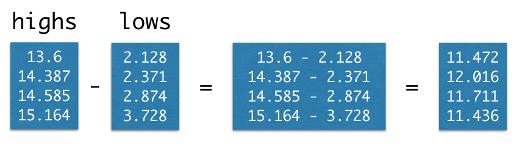

More on Arrays#
It’s often necessary to compute something that involves data from more than one array. If two arrays are of the same size, Python makes it easy to do calculations involving both arrays.
For our first example, we return once more to the temperature data. This time, we create arrays of average daily high and low temperatures for the decades surrounding 1850, 1900, 1950, and 2000.
baseline_high = 14.48
highs = make_array(baseline_high - 0.880,
baseline_high - 0.093,
baseline_high + 0.105,
baseline_high + 0.684)
highs
array([13.6 , 14.387, 14.585, 15.164])
baseline_low = 3.00
lows = make_array(baseline_low - 0.872, baseline_low - 0.629,
baseline_low - 0.126, baseline_low + 0.728)
lows
array([2.128, 2.371, 2.874, 3.728])
Suppose we’d like to compute the average daily range of temperatures for each decade. That is, we want to subtract the average daily high in the 1850s from the average daily low in the 1850s, and the same for each other decade.
We could write this laboriously using .item:
make_array(
highs.item(0) - lows.item(0),
highs.item(1) - lows.item(1),
highs.item(2) - lows.item(2),
highs.item(3) - lows.item(3)
)
array([11.472, 12.016, 11.711, 11.436])
As when we converted an array of temperatures from Celsius to Fahrenheit, Python provides a much cleaner way to write this:
highs - lows
array([11.472, 12.016, 11.711, 11.436])

What we’ve seen in these examples are special cases of a general feature of arrays.
Elementwise arithmetic on pairs of numerical arrays#
If an arithmetic operator acts on two arrays of the same size, then the operation is performed on each corresponding pair of elements in the two arrays. The final result is an array.
For example, if array1 and array2 have the same number of elements, then the value of array1 * array2 is an array. Its first element is the first element of array1 times the first element of array2, its second element is the second element of array1 times the second element of array2, and so on.
Example: Wallis’ Formula for \(\pi\)#
The number \(\pi\) is important in many different areas of math. Centuries before computers were invented, mathematicians worked on finding simple ways to approximate the numerical value of \(\pi\). We have already seen Leibniz’s formula for \(\pi\). About half a century before Leibniz, the English mathematician John Wallis (1616-1703) also expressed \(\pi\) in terms of simple fractions, as an infinite product.
This is a product of “even/odd” fractions. Let’s use arrays to multiply a million of them, and see if the product is close to \(\pi\).
Remember that multiplication can done in any order [1], so we can readjust our calculation to:
We’re now ready to do the calculation. We start by creating an array of even numbers 2, 4, 6, and so on upto 1,000,000. Then we create two lists of odd numbers: 1, 3, 5, 7, … upto 999,999, and 3, 5, 7, … upto 1,000,001.
even = np.arange(2, 1000001, 2)
one_below_even = even - 1
one_above_even = even + 1
Remember that np.prod multiplies all the elements of an array together. Now we can calculate Wallis’ product, to a good approximation.
2 * np.prod(even/one_below_even) * np.prod(even/one_above_even)
3.1415910827951143
That’s \(\pi\) correct to five decimal places. Wallis clearly came up with a great formula.
Footnotes#
[1] As we saw in the example about Leibniz’s formula, when we add infinitely many fractions, the order can matter. The same is true with multiplying fractions, as we are doing here. But our approximation to \(\pi\) uses only a large finite number of fractions, so it’s okay to multiply the terms in any convenient order.